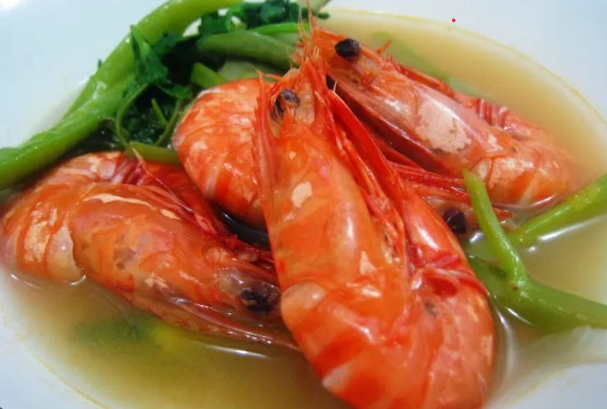

My Favorite Filipino Cuisines
Sinigang

- Pork or shrimp
- Tamarind paste
- Radish
- Eggplant
- Okra
Cooking Procedure for Sinigang...
Instructions: This is just one type of sinigang.
- In a large pot, bring the water or rice washing to a boil.
- Add the sliced tomatoes and onions to the boiling water. Simmer until they become soft and start to break down, which usually takes about 5-7 minutes.
- Add the sliced radish and eggplant to the pot. Let them cook for about 3-5 minutes or until they begin to soften.
- Stir in the tamarind powder or tamarind soup mix. Adjust the quantity based on your preferred level of sourness. You can add more if you want it very tangy. Season with fish sauce or salt and ground black pepper to taste.
- Add the shrimp and simmer until they turn pink and opaque, which should take about 3-5 minutes. Be careful not to overcook the shrimp as they can become tough.
- Add the green chili peppers (siling haba) if you want a spicy kick to your Sinigang. Simmer for an additional 2 minutes.
- Taste the Sinigang and adjust the seasonings if necessary. You can add more fish sauce, tamarind mix, or salt according to your taste preference.
- Remove the bay leaves and peppercorns.
- Serve hot with steamed rice. It's common to serve Sinigang with a side dish of fish sauce with crushed red pepper and calamansi or lime for added flavor.